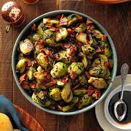

Odin-recipes
 Lasagna
Lasagna
Lasagna Ingredients
This lasagna recipe is good for family night or you can make larger portions for events. Your family and friends will enjoy this dish wether its a Sunday evening or at a party.
- 1 (16 ounce) package Johnsonville® Italian Ground Sausage
- 2 garlic cloves, minced
- 4 cups marinara sauce
- 1 teaspoon dried oregano
- 2 (15 ounce) containers ricotta cheese
- 1 egg, beaten
- ½ cup grated Parmesan cheese, divided
- 2 cups fresh spinach, chopped
- 2 cups shredded mozzarella cheese
Steps
- In a skillet, cook sausage, onion and garlic until pork is no longer pink and onion is tender; drain. Add marinara sauce and oregano; simmer for 5 minutes. In a bowl, combine ricotta cheese, egg, 1/4 cup Parmesan and spinach.
- In a greased 13-in. x 9-in. x 2-in. baking dish, spread 1 cup meat sauce. Arrange 3 noodles over sauce. Spread one-fourth of the ricotta cheese mixture over the noodles, top with 1 cup of meat sauce. Sprinkle with 1/2 cup mozzarella cheese. Repeat process 3 times. Top with remaining Parmesan cheese. Bake, uncovered, at 350 degrees F for 40 to 45 minutes. Let stand for 10 minutes before cutting. Serve.
Brussel Sprouts Ingredients

Brussel Sprouts
This brussel sprouts recipe is good for those new to brussel sprouts. Your family and friends can enjoy this side dish paired with other meats and veggies.
- 2 pounds Brussels sprouts, halved
- 6 bacon strips, chopped
- 2 tablespoons olive oil
- 1/2 teaspoon kosher salt
- 1/2 teaspoon pepper
- 2 tablespoons balsamic glaze
Directions
- Preheat oven to 450°. In a large bowl, toss Brussels sprouts, bacon, olive oil, salt and pepper. Transfer to a 15x10x1-in. baking sheet. Roast, stirring halfway through cooking, until sprouts are tender and lightly browned, 20-25 minutes. Drizzle with balsamic glaze; serve warm.
Taco Ingredients
 Tacos
Tacos
This Tacos recipe is easy and tasty! Your family and friends can enjoy these tacos paired with other dishes and appetizers. There are many additions you can add depending on your taste.
- Ground Beef - Since these are “easy ground beef” tacos, we are using beef. Feel free to use your preference of meat.
- Garlic - Fresh is best! Minced.
- Tomato Sauce - Use your favorite!
- Chicken Broth - I opt for low sodium.
- Taco Seasoning - Make your own using my taco seasoning recipe, store bought works as well.
- Tortillas - Corn tortillas or flour tortillas (You can also make your own using my tortilla recipe).
- Cheese - Mexican cheese blend, shredded.
- Avocado - Chopped
- Pice de Gallo - Use my recipe for an easy homemade Pico de gallo!
- Lettuce - romaine lettuce or iceberg, shredded
Steps
- Cook Beef: Add the ground beef to a large skillet and cook over medium heat until no longer pink. Drain any fat if necessary. Add the garlic and cook for another 30 seconds until aromatic.
- Add Ingredients: Stir in the tomato sauce, chicken broth and taco seasoning. Bring to a simmer and let it cook for another 5 minutes until most of the liquid has evaporated.
- Assemble & Serve: Assemble tacos by filling them with meat and desired tacos.